A free travel companion for however you roam
Never Roam Alone answers the practical questions travelers ask before they book, whether they go alone, as a couple or in a group, city by city, and surrounds those guides with free planning tools and a community of travelers who have been there.
- Name
- Never Roam Alone
- Tagline
- Your Travel Companion
- What it is
- A free website of practical, data-rich city guides and trip-planning tools, built for people who travel on their own.
- Who it's for
- Anyone planning a trip: individuals, couples, families and groups. Solo travelers also get dedicated ratings (solo comfort, women traveling solo) and tips throughout the guides.
- Coverage
- 893 city guides across 197 countries, and counting. Every guide follows the same checklist, so a reader can compare Aachen with Abidjan on the same terms.
- Languages
- English, Español, Français, Italiano, 中文
- Business model
- Free to use. Some booking links are affiliate links, disclosed on every page; they never change the price a traveler pays.
- Founder
- Jeff Wolinsky
- Contact
- contact@neverroamalone.com · contact form
Describe it in one line, or two hundred words
Four approved descriptions. Use them as written, or trim; please keep the city and country counts current with the site.
One line ≈ 20 words
Never Roam Alone is a free travel companion with practical city guides for 893 cities in 197 countries, for solo travelers, couples, families and groups alike.
Short ≈ 50 words
A free travel companion with practical city guides for 893 cities in 197 countries, with tools to help research, book & navigate worldwide travel.
Medium ≈ 100 words
Never Roam Alone is a free travel companion for every kind of traveler: individuals, couples, families and groups. Its 893 city guides, spanning 197 countries, answer the questions people actually ask before they book: how long to stay, which neighborhood to sleep in, what a day really costs, how safe and walkable the city is, are credit cards widely accepted, cell phone connectivity, getting around the city and more. Along with guides there are free planning tools, an interactive world map, a Destination Finder that matches cities to your budget and season, side-by-side city comparisons, a monthly "where to go" guide, and ‘Ask A Roamer’ forum, where experienced travelers answer your questions.
Long ≈ 200 words
Never Roam Alone is a free travel companion for anyone planning a trip, whether that is one person, a couple, a family or a group of friends. The site's promise is in the name: wherever you go, and whoever you go with, you carry the collected knowledge of travelers and locals who have already been there.
At its center are 893 city guides covering 197 countries. Each guide is organized the way a traveler thinks: how long to stay, when to go, which neighborhoods to sleep in (with lodging at every price tier), what a day really costs in local currency, how safe and walkable the city is, how comfortable it feels to explore (including dedicated solo-comfort and women-traveling-solo ratings), how to get in from the airport and around town, what the phone and Wi-Fi situation is, which plug to pack, and which day trips are worth the train ticket. Guides also carry top sights, upcoming events, common phrases, and first-hand "Traveler's Take" and "Local's Perspective" notes.
Around the guides are free planning tools: an interactive world map sized by annual visitors, a Destination Finder that matches cities to your budget, travel time and season, side-by-side city comparisons, a monthly "where to go" guide, underrated picks, a trip planner, and Ask A Roamer, a Q&A answered by travelers who have been there. The interface is available in English, Spanish, French, Italian and Chinese.
Guides at the center, tools around them
- Interactive world map
Every city as a bubble sized by annual international visitors. Click a bubble to open its guide.
neverroamalone.com - City Guides
Browse and search all 893 guides; sort A to Z or by popularity, and favorite the ones you're considering.
cities.html - Destination Finder
Answer a few questions and get cities matched to your budget, travel time, season and visa rules.
choose.html - Compare Cities
Two cities side by side: costs, weather, safety, walkability, visitor popularity and visa rules.
compare.html - Where to Go This Month
Cities with ideal weather and festivals worth planning around, for every month of the year.
best-time-to-visit.html - Top Visited & Underrated Picks
The most-visited cities on the site, and the ones travelers overlook.
underrated-picks.html - Ask A Roamer
Real questions answered by travelers who have been there.
askaroamer.html - Blog
Stories, tips and travel wisdom from the community.
blog.html - Community & Trusted Travelers
Pitch a blog post, or apply to become a Trusted Traveler who answers questions and vouches for places.
community.html - Trip planner, favorites & profiles
Save cities, build a day-by-day itinerary, and see other roamers who are in town.
itinerary.html
The same checklist for every city
Each guide is laid out as numbered plates, the way a field guide is. This is what a reader finds on every one of the 893 pages.
The mark and the wordmark
Two figures on a path under the mountains, inside an olive ring. The wordmark is hand-lettered in Amatic SC; the tagline sits beneath it in letter-spaced caps.
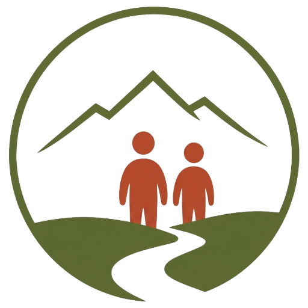
{kind=link}
{kind=link}
{kind=link}
{kind=link}
{kind=link}
{kind=link}
{kind=link}
Do · please
- Use the supplied files; don't redraw or retrace the mark.
- Keep clear space around the mark at least the height of the figures.
- Show it at 32 px tall or larger on screen.
- Place it on sand, white, or a photo with enough contrast.
- Set the wordmark in Amatic SC Bold, Rust, when you need text next to it.
Don't · thanks
- Recolor the mark, or put it in a single flat color.
- Add shadows, outlines, gradients or effects.
- Stretch, rotate or crop it.
- Put it inside another shape, or lock it up with other logos.
- Use it to imply endorsement without written agreement.
Sand, ink, rust and olive
The palette comes from paper maps and trail signage. Sand is the ground; rust carries the wordmark and calls to action; olive is the mark and primary buttons; brass is for badges and small highlights. Click a swatch to copy its hex.
Three faces, three jobs
All three are free on Google Fonts. Amatic SC appears only in the wordmark and for the one emphasized word in a headline, never for running text.
Google Fonts: Amatic SC, Fraunces and Work Sans in one selection.
The site as it looks today
Captured September 2026 at 2× resolution with the cookie notice dismissed. Use them unedited, with a credit to Never Roam Alone and a link.
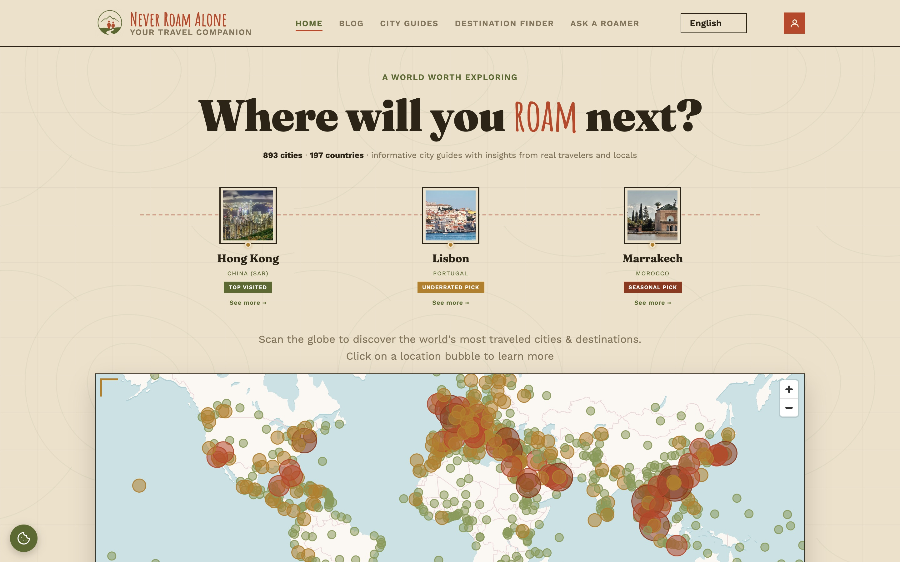
{kind=link}
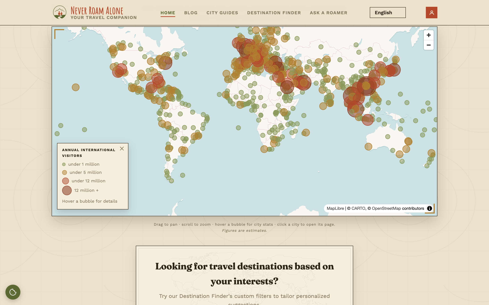
{kind=link}
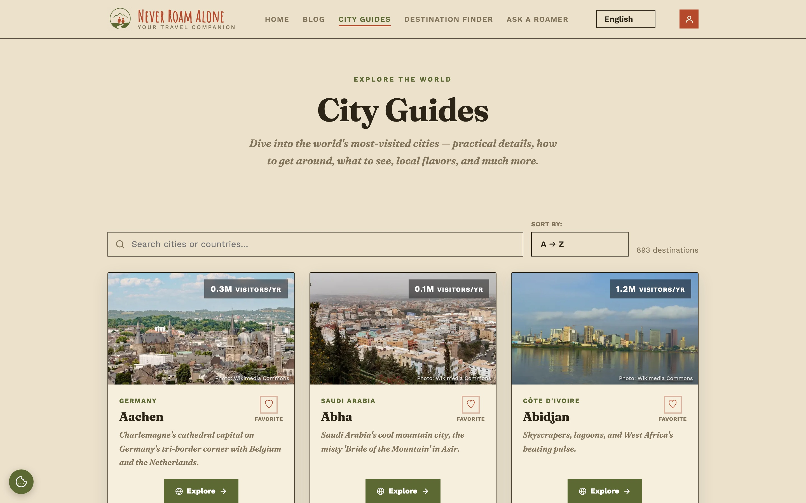
{kind=link}
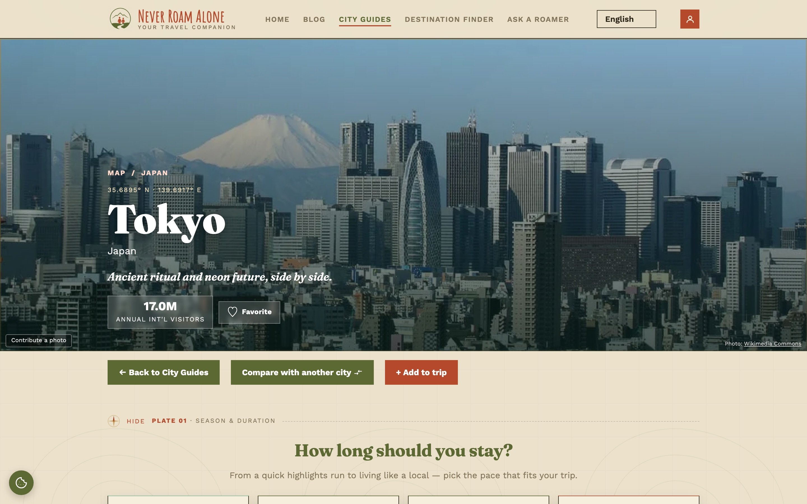
{kind=link}
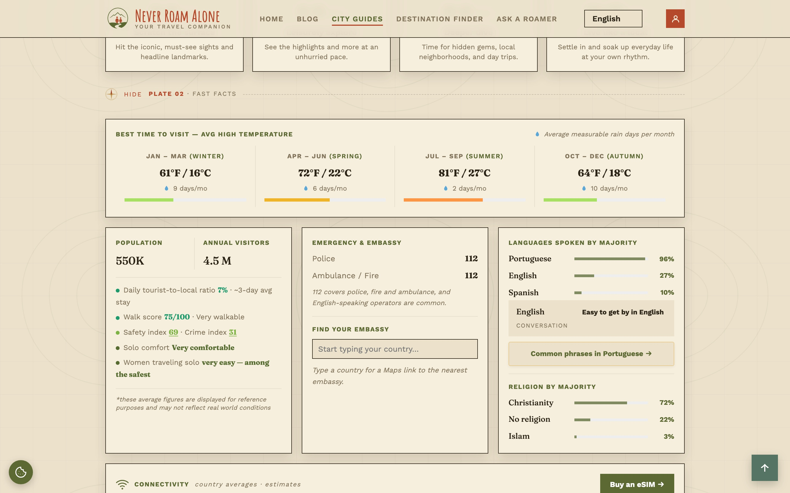
{kind=link}
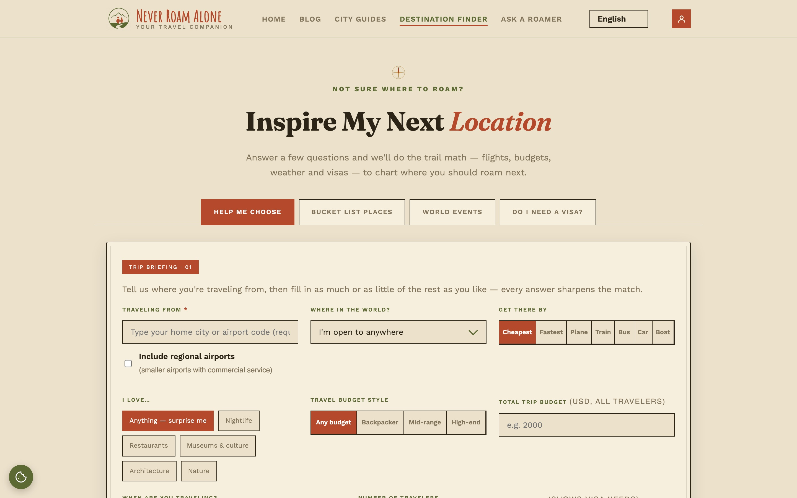
{kind=link}
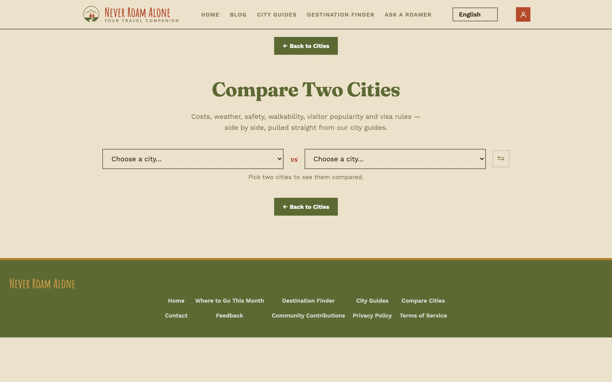
{kind=link}
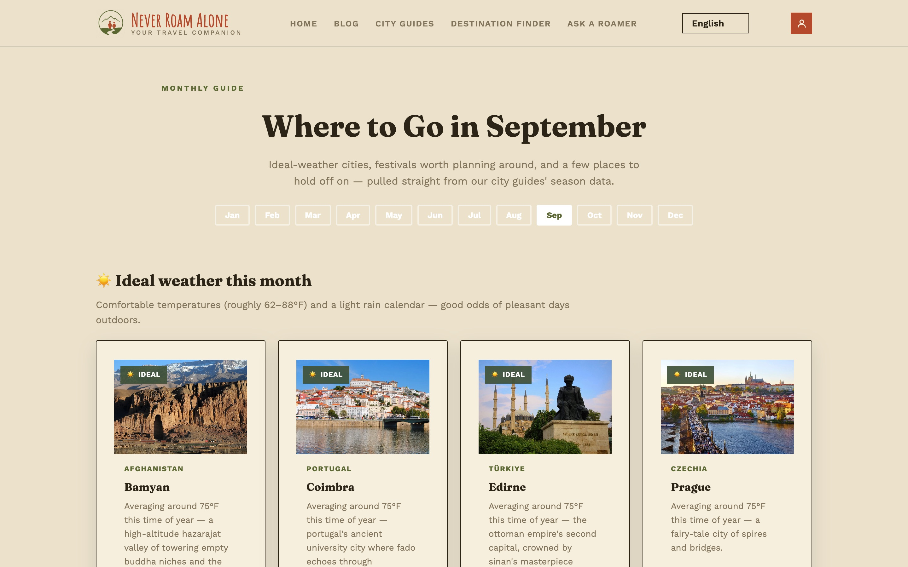
{kind=link}
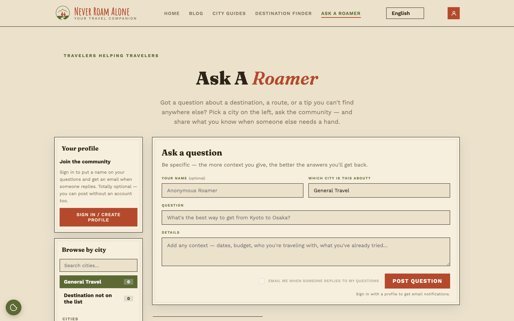
{kind=link}
{kind=link}
Five ways in for press and creators
- One site, 893 cities: how one free travel companion covers 197 countries with the same practical checklist for every city.
- The solo-comfort score: the site's dedicated solo-travel strand, and which cities rate best for exploring alone.
- Ask A Roamer and the Trusted Traveler program: advice from people who have actually been there, not from an algorithm.
- Where to go this month: a data-driven monthly shortlist built from weather and festival data.
- The practical stuff nobody covers: plug types, SIM prices, card acceptance and airport transfers, city by city.
Founder bio and social handles are not on the site yet. Add two or three sentences about Jeff and the @handles here before sending the kit out.
How to use this kit
Everything here may be used to write about, review or promote Never Roam Alone. Please credit the site and link to it. Screenshots and graphics may be cropped but not altered. Don't imply endorsement or partnership without written agreement, and keep the city and country counts current with the live site.
Ready-made graphics and captions
Sized for each platform and built from the brand system above. The city spotlight is a template: the same layout works for any of the 893 cities with its own numbers.
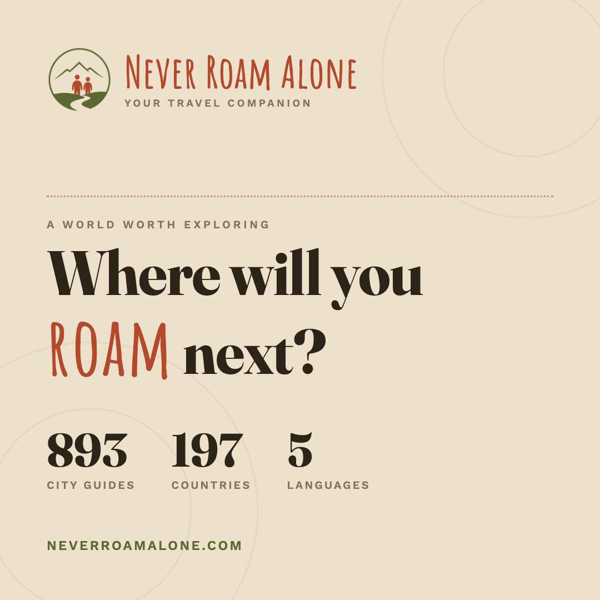
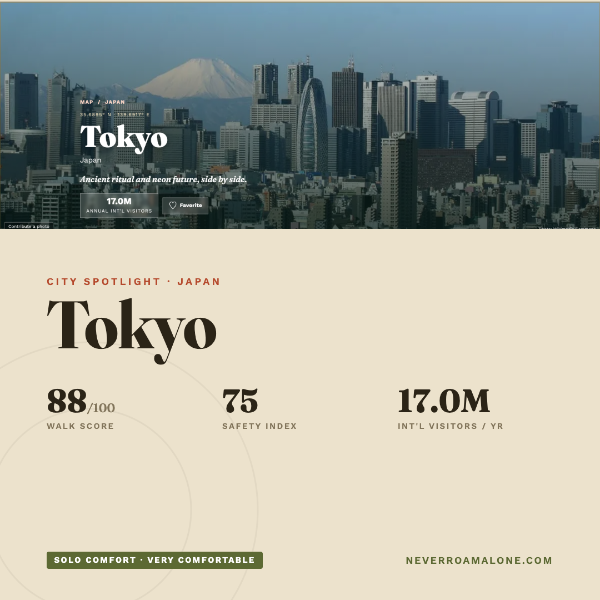
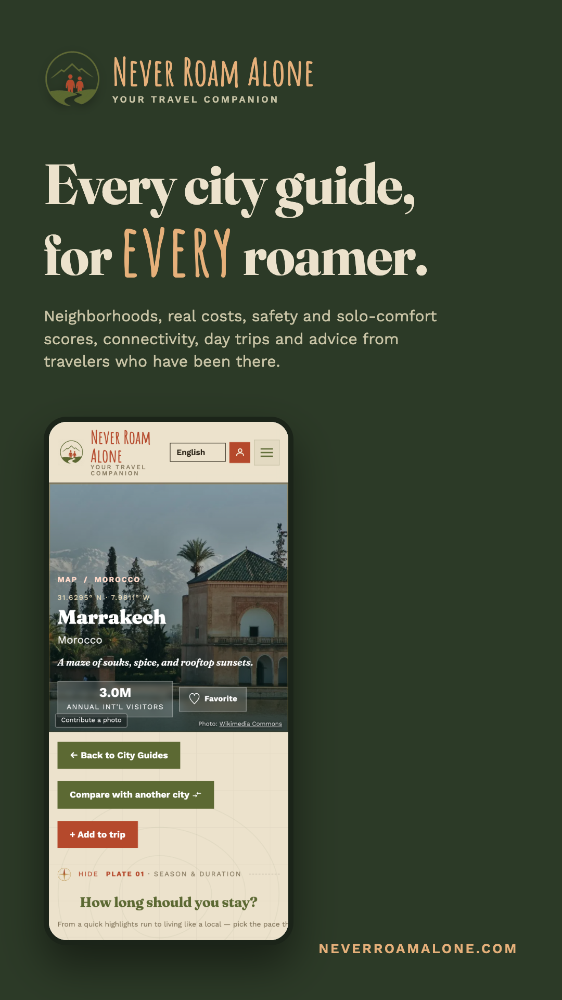
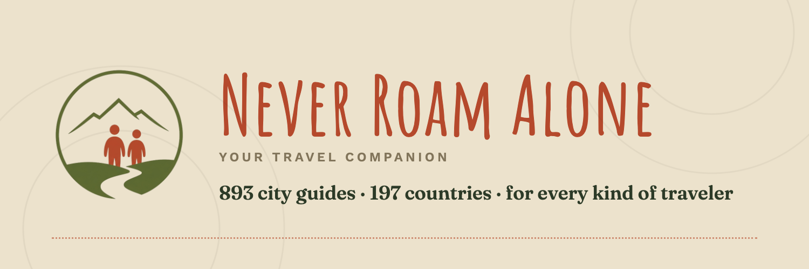
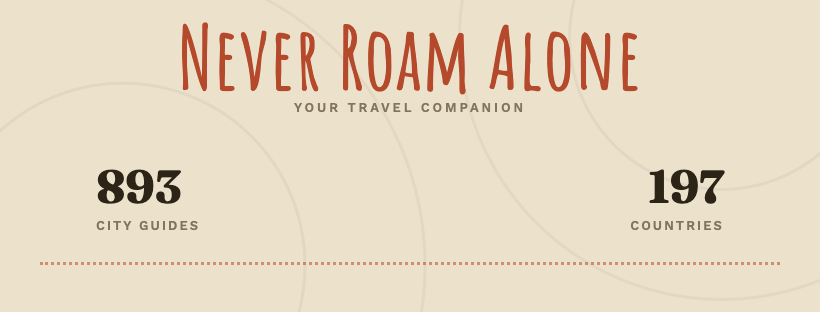
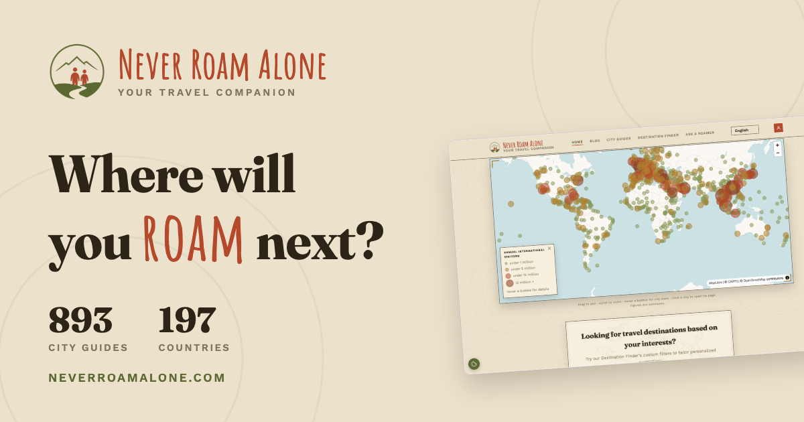
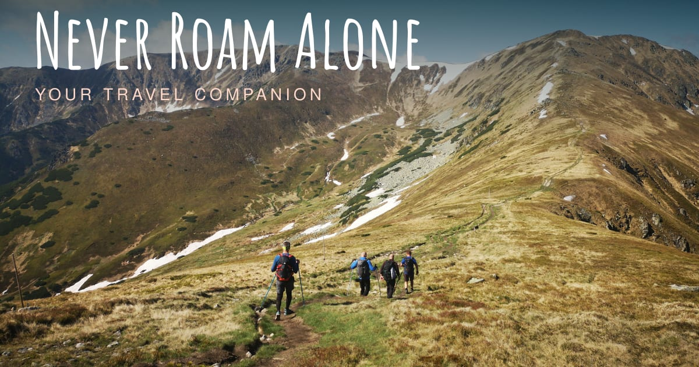
Captions, ready to paste
Launch · Instagram, Facebook
Where will you roam next? 🌍 Never Roam Alone has free, practical city guides for 893 cities in 197 countries, for solo travelers, couples, families and groups alike. Neighborhoods, real costs, safety scores, day trips and advice from travelers who've been there. Link in bio. #NeverRoamAlone #TravelPlanning
Launch · X, Threads
893 cities. 197 countries. One free travel companion, whoever you travel with. Where will you roam next? neverroamalone.com
Feature · Destination Finder
Can't decide where to go? Tell the Destination Finder your budget, how far you'll fly and when, and it shortlists cities that fit. Free at neverroamalone.com #TravelPlanning #WhereToNext
Feature · Compare Cities
Lisbon or Porto? Bangkok or Chiang Mai? Put two cities side by side: costs, weather, safety, walkability, visa rules. neverroamalone.com/compare.html
Feature · Where to Go This Month
Ideal weather, festivals worth planning around, and a few places to hold off on. Our month-by-month guide is live for every month of the year. #WhereToNext
City spotlight · swap the city and numbers
City spotlight: Tokyo 🇯🇵 Walk score 88/100 · Safety index 75 · Solo comfort: very comfortable · 17M international visitors a year. Full guide, including where to stay and what a day costs: neverroamalone.com/city.html?city=Tokyo
Ask A Roamer
Got a question only someone who's been there can answer? Ask A Roamer connects you with travelers who have. neverroamalone.com/askaroamer.html
Community call
Been somewhere memorable? Pitch a story for the blog, or apply to become a Trusted Traveler and help newcomers feel at home. neverroamalone.com/community.html
Reel / TikTok script · 15 to 20 seconds
"Planning a trip? Here's the one tab I keep open. Never Roam Alone: pick a city, and you get how long to stay, which neighborhood to sleep in, what a day costs, how safe it is, how to get in from the airport, and what the phone situation is. 893 cities. Free. Link's in my bio."
Hashtags · core
#NeverRoamAlone #TravelGuide #CityGuide #WhereToNext #TravelPlanning #TravelTips
Hashtags · reach
#Wanderlust #CoupleTravel #FamilyTravel #GroupTravel #SoloTravel #DigitalNomad #TravelCommunity